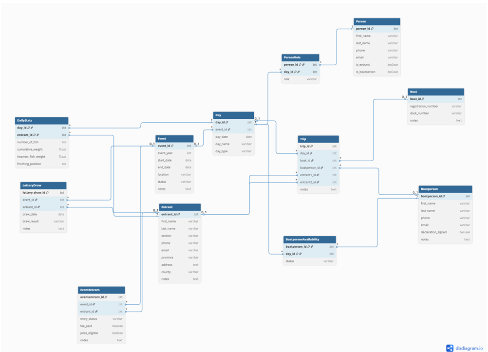

Database Design
World Cup Angling Championship Database
A relational database designed to organize the participants, resources, and competition structure of an international angling event.
Project Overview
This project involved designing a relational database for the World Cup Shore Angling Championships while studying abroad at the University of Galway in Ireland. The goal was to create a database capable of organizing and managing every stage of the competition, including events, entrants, boats, boat personnel, daily schedules, lottery draws, and competition results. By translating a complex real-world event into a structured relational database, I developed a system that supports efficient data organization while maintaining accuracy and consistency across related information.
Technologies Used
Database Design
The database was designed using relational database principles and normalized to Third Normal Form (3NF) to reduce redundancy and improve data integrity. I identified the entities, attributes, primary keys, foreign keys, and relationships required to accurately represent the competition while enforcing business rules through the database structure. The final design included associative entities, composite keys where appropriate, uniqueness constraints to prevent scheduling conflicts, and SQL table definitions that maintained referential integrity throughout the system.
What I Learned
This project strengthened my understanding of the complete database design process, from analyzing business requirements to developing an entity-relationship model, relational schema, and SQL implementation. It challenged me to think critically about how data should be structured, how relationships between entities should be represented, and how constraints can be used to preserve data integrity. Beyond improving my SQL and database design skills, this project reinforced the importance of careful planning before implementation and demonstrated how a well-designed database can support complex real-world operations.
Project Display

Database ER Diagram
This diagram maps the entities, attributes, primary and foreign keys, and relationships that were identified during the database design process before the schema was implemented using SQL.